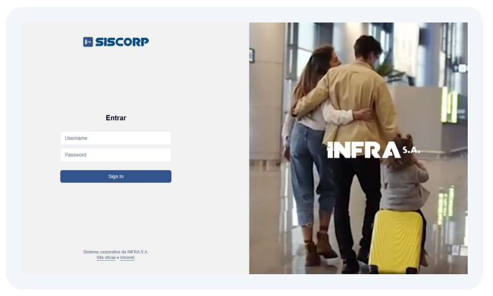
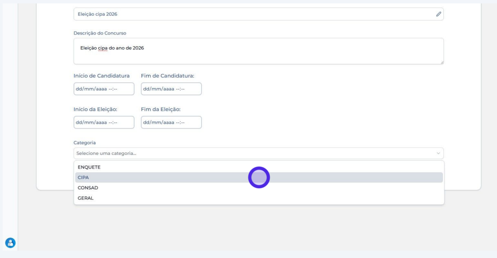
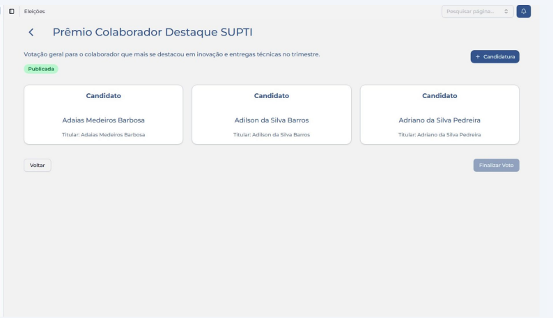
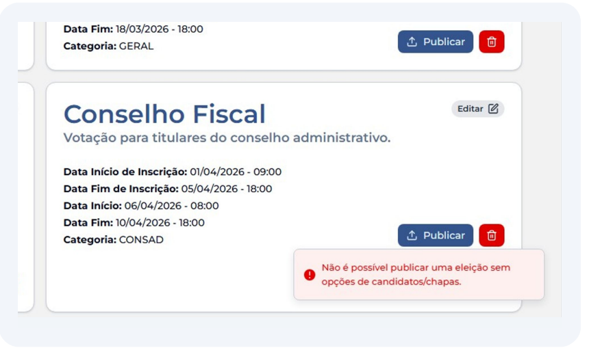
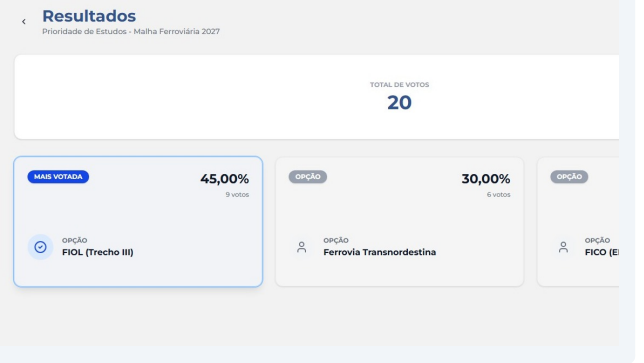
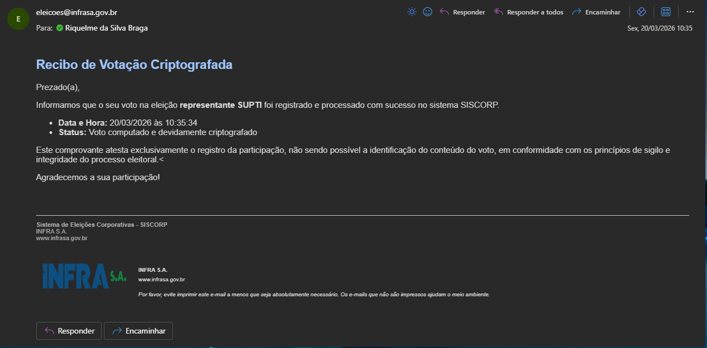

Riquelme Braga
Desenvolvedor Junior
Desenvolvedor Junior
Sou um estudante de Análise e Desenvolvimento de Sistemas e Desenvolvedor Full Stack, apaixonado por arquitetura de software e qualidade de código. Tenho experiência prática na criação de sistemas web corporativos, com foco em segurança, integridade de dados e interfaces dinâmicas. Minha stack principal envolve Python e FastAPI no backend, React e TypeScript no frontend, além de um forte domínio de Docker e ambientes Linux para infraestrutura e DevOps. Gosto de resolver desafios de arquitetura, como implementar notificações assíncronas e estruturar casos de teste precisos. Sou movido pelo desafio de transformar regras de negócio complexas em aplicações rápidas, limpas e altamente funcionais.
Desenvolvimento e sustentação de um sistema seguro, auditável e de alta performance para a gestão de eleições corporativas da Infra S.A. A plataforma garante o sigilo do voto, a integridade do processo democrático interno e a aplicação de regras complexas de legislação trabalhista. Stack Tecnológico: Python, FastAPI, React, TypeScript, SQLAlchemy, Docker.

Integração segura com credenciais corporativas (LDAP). O backend extrai a identidade do eleitor diretamente do payload do token JWT, garantindo a regra de "um utilizador, um voto" sem quebrar o sigilo do voto criptografado.

A API em FastAPI gerencia dinamicamente formulários e regras de negócio complexas. O painel controla rigorosamente o ciclo de vida da urna (Criada, Publicada, Finalizada), adaptando-se a pleitos como CIPA e CONSAD.

Interface em React projetada para ser acessível e à prova de falhas para o usuário final. Permite o registro rápido da escolha de candidatos ou chapas, processando também opções legais como Voto em Branco e Nulo nativamente.

O frontend trata exceções de forma clara, exibindo alertas imediatos que bloqueiam requisições inválidas na UI. O sistema impede ações fora do prazo eleitoral ou tentativas de votos duplicados.

Queries otimizadas no SQLAlchemy agregam os votos no banco de dados, calculando a proporção de votos válidos. A lógica automatiza critérios legais de desempate (NR-5), garantindo transparência no painel.

Implementação de disparo de e-mails usando smtplib e BackgroundTasks do FastAPI. Garante o envio de comprovantes de voto sem bloquear a resposta da API ou causar lentidão na interface do eleitor.